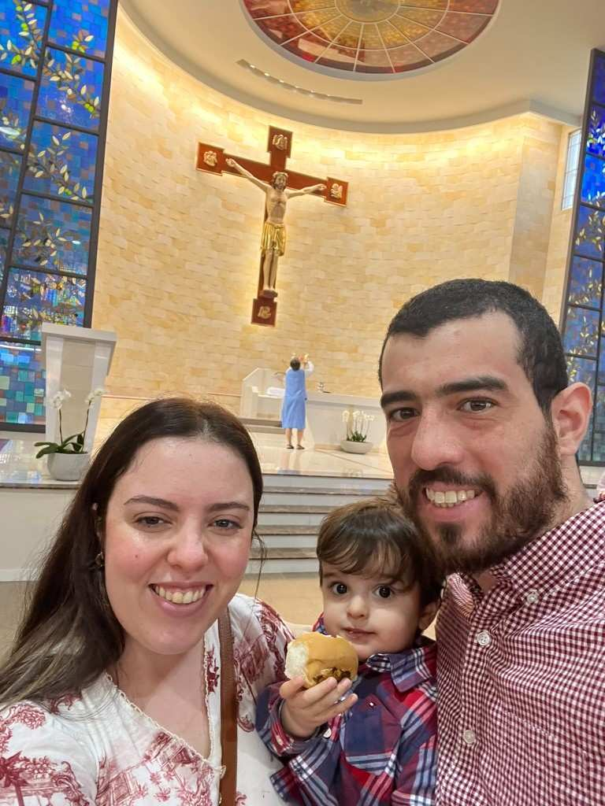

Mini-Luigi
Nasci no início dos anos 90 em Maringá e os japoneses daquela região me fizeram sair do hospital com o controle do SNES.

Música
Toco violão desde 2002 e desde então aprendi outros instrumentos. Minha afinidade pela tecnologia me auxiliou a gravar e editar arquivos de áudio. Sim, eu compus a música (apenas um trecho) no rodapé do site.
YouTube
Durante um período de tempo trabalhei para o Google via YouTube, aprendi a editar vídeos, adicionei meus áudios, minhas músicas, e me ajudou por um tempo — até me acidentar gravemente de moto, quando deletei o canal.

Família
Cândida (com Maria), Miguel e Luigi em Santa Maria/RS, onde nos conhecemos, casamos e tivemos dois filhos.